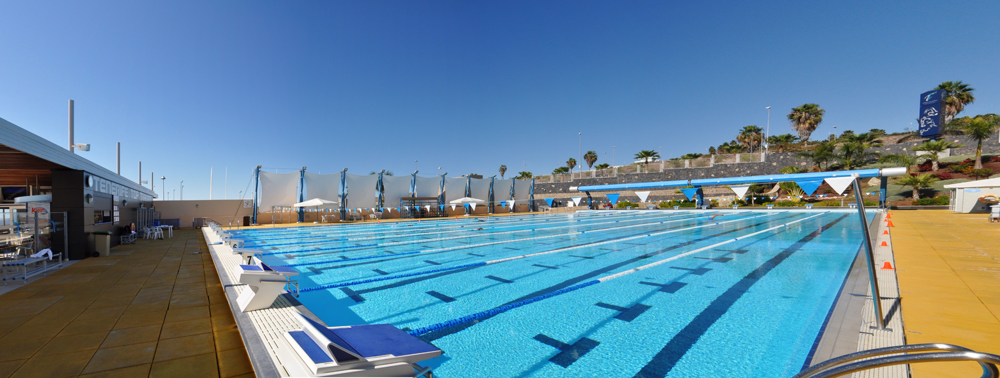

About Me
Senior at UC San Diego studying Computer Science with a focus in Computer Security.


Senior at UC San Diego studying Computer Science with a focus in Computer Security.
Born in San Francisco, raised in San Jose, educated in San Diego,graduating June 2015. I spent a few weeks abroad in Nicaragua in 2010. I am a competitive swimmer and played on the UCSD Women's Club Water Polo team. I love the outdoors, experimenting with food, and clearing out my Netflix queue on rainy days.
My stumble into Computer Science was purely luck-- I needed another class to take, and a friend suggest an intro class. Luckily for me, I liked it! Since then, I have come to realize my passion for computer security. It is a field that is always changing, allowing myself to stay ahead of the game by constantly challenging myself.
Versioning on Payments Widgets meant to resolve release bottlenecks. I developed the versioning backend in Java to save widget static content, and built an internal Amazon database to store hash-keys to this data. All of my work served internal purposes and cannot be seen outright in any of the front-facing payment systems that Amazon has today, but it has helped solve many release issues with functionality that allowed version customization and easy rollout and rollback.
A Lactation Room Reservation System for nursing mothers. The purpose of this web application is to help nursing mothers effectively use their time by being able to plan ahead and help them locate all the lactation rooms on campus. To build this web application, I utilized Google Calendar API to build in calendar functionality in PHP and Javascript. I implemented the backend component of this application, parsing all user data and setting up a service account with Google so that we could send in user data to fill the calendar. I also created all the calendars and wrote scripts on Google App-Engine to automate the sign-up process.h
The optiportables will be placed in low-income under-represented communities to act as conveyers of information back to UC San Diego's Qualcomm Institute and also hopefully act as a connection to more resources and social initiative for the community. One proposed project is for a SMS-based web application used to crowdsource environmental data. This data will be mapped in an aerial view of the city to encourage better urban planning and decrease health risks for city inhabitants. Another proposed project is to do video-conferencing that could allow doctors to "treat" patients just by seeing their condition and perhaps with some simple medical equipment that patients would be able to use with just the help of a community worker.

Women In Computing is an organization whose purpose is to support the female presence in computing.
I have been a part of this organization from the moment I first found out about it, and have since been able to find support, advice, and many opportunities with them. In order to give back, I joined the executive board last year as the Professional Development Chair and will be tackling the role of President this year.
Member since 2012:
President 2014-2015
Professional Development Chair 2013-2014
Member 2012
The Triton is a symbol for UC San Diego, and as an athlete, the Triton was my mascot whenever I was in and out of the water.
I have been playing water polo for almost a decade, and have been swimming my whole life. I played Water Polo for the UCSD Womens Club Team and I swam competitively in club teams with the 200 Individual Medley and 100 Butterfly events. In my free time, I have experimented with Diving and can do some basic dives.
UC San Diego Womens Club Water Polo 2011-2013
Ohlone Renegades Club Waterpolo 2010-2011
Independence High School 2007-2011
West Coast Aquatics Swim Team 2002-2010
Warren College at UC San Diego is named after the Supreme Court Justice, Earl Warren. It's motto "Toward a Life in Balance" defines my time spent there. I took a range of diverse classes and had the opportunity to be a Resident Advisor. As an RA, I overlooked 2 floors of 50 residents and planned many community and hall events, in addition to mediating conflict and acting as a mentor to my residents.
Warren Class of 2015
RA for Harlan Hall - 3rd and 4th floor 2012-2013
Stewart Hall - 5th floor 2011-2012
WAVE Member (Warren Association of Volunteer Enthusiasts) 2011-2012